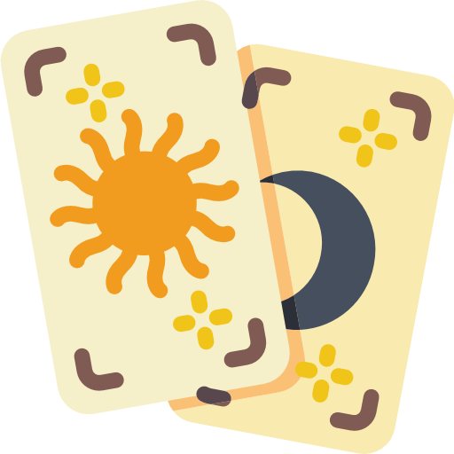

0 The Fool 愚人
- 對應占星：天王星
- 對應人物：Dionysos
- 四元素：風元素
- 加強牌：倒吊人、星星、審判、權杖三
- 相關傳說：酒神。 Zeus和Semele之子。從Zeus大腿出生。由於 是私生子，因此Zeus請人撫養，並有優秀的老師教導。由於Hera的緣故，使他到各地流浪，受盡考驗
牌面描述
愚人穿著色彩斑斕的衣服，戴著像小丑一樣的帽子，手舞足蹈，昂首闊步，站立在懸崖邊。他是鹵莽而無知的：他的右手拿著象征權力的權杖，那恰是魔術師（大阿爾卡那1號牌）手中的魔杖，相傳擁有操控世界的魔力，上面掛著的包袱里裝著經驗，但他只是不以為意地扛著，卻不懂得運用。可是他頭上的桂冠代表著成功的可能。他有著相信夢想純摯的一顆心，左手持著白玫瑰，白色象征純潔，玫瑰象征熱情，同時也代表天真無知。腳邊的小白狗象征著愚人和動物一樣，憑本能行事。他無畏于腳邊的懸崖，眼望長空，神色歡欣。哪怕他就快要從崖旁踩空掉下去了，但他似乎相信，生命將會支援他的。遠方的山脈象征著他未來的旅程。他永遠沐浴在白色的陽光下。他可是追尋經驗的靈魂。

關鍵詞
正位：開端、自由、純真、冒險、理想主義
逆位：魯莽、粗心、心煩意亂、天真、愚蠢